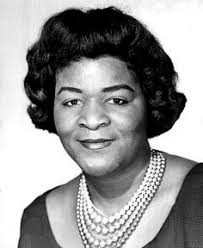

Zenobia Powell Perry
1908-2004

Time Line
The following is an excerpt from Dr. Jeannie Gayle Pool's Ph.D. dissertation completed in May 2002
- October 3, 1908— Born, daughter of Dr. Calvin B. Powell and Birdie Thompson Powell in Boley, Okfuskgee County, Oklahoma.
- 1919— Won piano competition, at age 11
- May 26, 1938— Received B.S. degree from Tuskegee Institute
- August 31, 1945— Graduated from Colorado State College of Education with Master of Arts degree
- August 20, 1954— Received Masters in Music in composition from University of Wyoming.
- October, 1955— Joined faculty of Central State University in Wilberforce, Ohio
- June 1, 1970— New York premiere of Heritage and Life, A Cycle of Songs, Lincoln Center, at the Library and Museum of the Performing Arts. Janis-Rozena Peri, soprano and Judith Gels, piano
- May, 1987— Premiere of opera Tawawa House, Central State University.
- April 25, 1999.— Woman of the Year Award, Paul Laurence Dunbar House State Memorial, Dayton, Ohio.
- January 21, 2002— Received 2002 Cultural Arts Award for outstanding contributions in the field of Music Education, National Afro-American Museum, Wilberforce, Ohio.